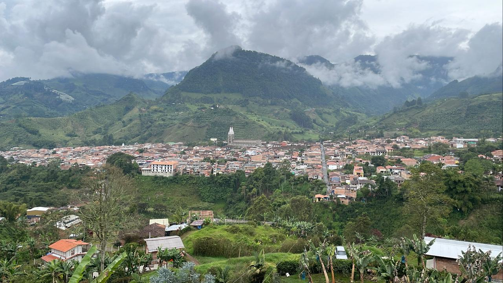
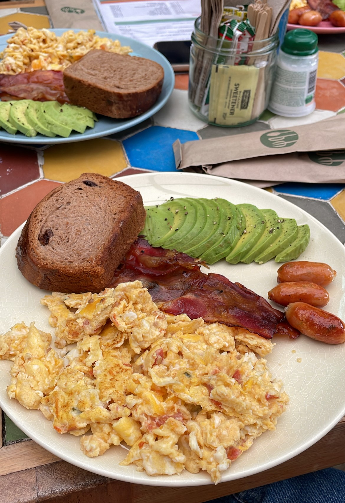
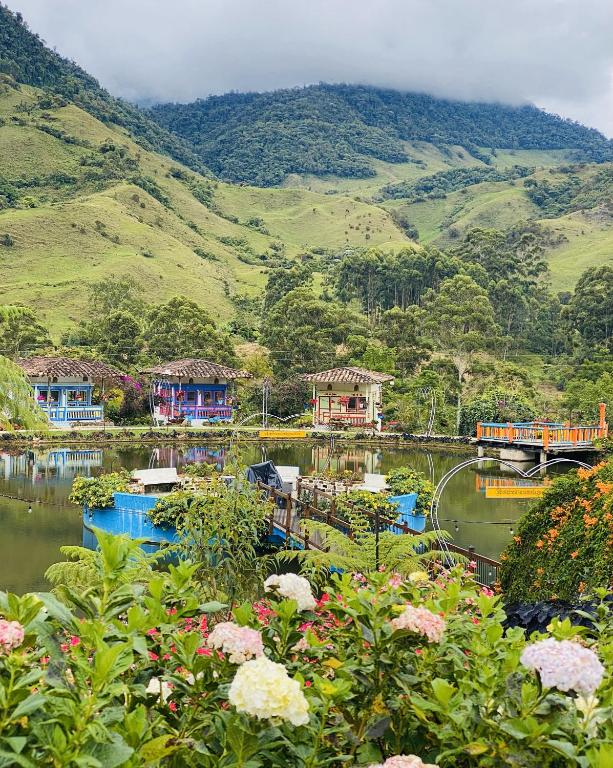

JARDÍN
Que hacer?
- Subir al camino la Herrera
- Conocer la cueva del esplendor
- Montar en la garrucha
- Hacer el recorrido de los tuneles
- Visitar la Basilica de la Inmaculada Concepción
- Realizar un tour cafetero
Te dejamos este video donde puedes ver un poco de lo que sera tu visita al pueblo mas lindo de Antioquia
Donde comer?
-
@macanasjardin
Este café es reconocido a nivel nacional por su famosa pared de materas de colores, aquí vas a poder disfrutar de un café de origen, de un desayuno bien trancado y por qué no, terminar con su famosa torta de chocolate, red velvet o zanahoria, tampoco te puedes ir del lugar sin antes haber probado la famosa malteada de gulupa.
-
@trucheramontemar
Uno de los platos típicos de Jardín es la trucha y para nosotros la de este lugar es la más rica de todo el pueblo, es crocante y aparte de eso te la acompañan con un patacón gigante, hogar y una salsa tártara que está para chuparse los dedos, el precio aproximado por plato es de $22.000 con bebida.
-
@oleobistro
Este restaurante se los recomendamos para que tengan una cita romántica, aquí vas a encontrar desde una cazuela, hasta un lomito, la carta es bastante amplia y con toda seguridad vas a encontrar un plato que te encantará… también cuentan con una gran variedad de vinos y cocteles; los precios aquí empiezan en $6.500 y llega hasta unos $40.000 aproximadamente.
Donde hospedarse
En esta ocasión te recomendamos el hotel Lago La Valdivia, este maravilloso hotel cuenta con dos piscinas de agua natural, piscina para niños, piscina para adultos, cabañas familiares, para parejas o habitaciones individuales, esta a 8 minutos del parque principal y tiene su propio restaurante donde podras probar todo tipo de platos desde comida tipica hasta platos internacionales, lo mejor de todo es que es petfriendly por lo que podras llevar a tu mascota sin ningun problema. Por las noches hacen fogatas para un ambiente muy romantico o familiar.